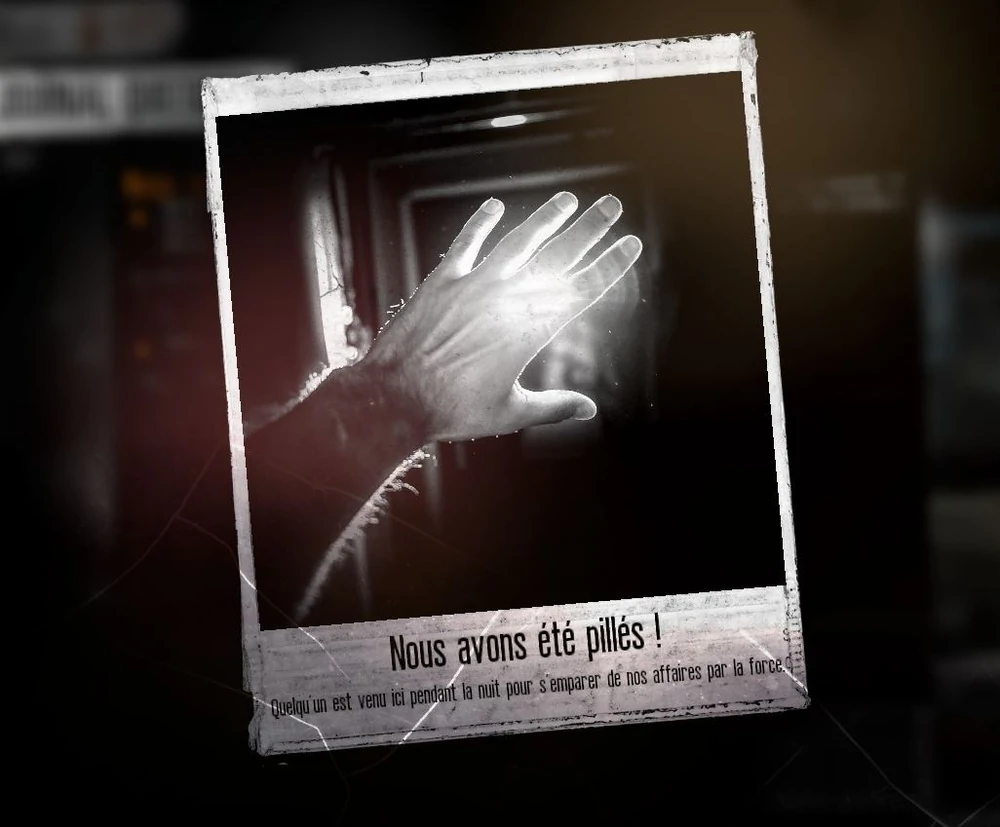
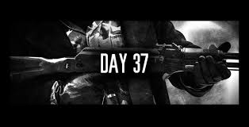

le matin, au tout début de la journée, après avoir fait tout ce que vous vouliez la nuit (mais on en reparle plus tard), vous allez découvrir si quelqu'un vous a attaqué

Au début du jeu les criminels ne seront pas très dangereux, mais il vous fera quand même des armes comme des couteaux ou des haches pour les repousser sans qu'ils vous volent quoi que ce soit
Mais après un certains lapse de temps, un évènement va avoir lieu...

Les criminels, à partir de ce moment, deviendront bien plus dangereux. Il faudra des armes plus importantes comme des fusils (et donc des munitions) pour pouvoir les repousser. Vous pourrez aussi renforcer votre abris en renfermant ses trous dans les murs
Les attaques se feront aussi plus fréquentes, il faudra donc avoir des survivants qui ne seront pas trop fatigué et des réserves de munitions importantes!
Aussi, lors des assauts, vos assaillants vont possiblement blésser vos survivants. Deux solutions s'offrent à vous: les soigner avec des bandages ou trouver des protections lors de la collecte. La deuxième solution est très complexe et signifie généralement que vous avez tué un bandits lors d'une colllecte qui avait ces protections.
En parlant de la collecte, voici quelques informations dessus